で口座を作る
で口座を作る

Web版YTTを使うには、証券会社の取引口座が必要です。
HFMなら、登録から口座の開設までネットでできます。
Web版YTTを使うには、証券会社の取引口座が必要です。
HFMなら、登録から口座の開設までネットでできます。
 口座の作り方
口座の作り方


上から順番に進めてください。
 STEP 1
STEP 1

居住国・メールアドレス・パスワードを入力して「続行」
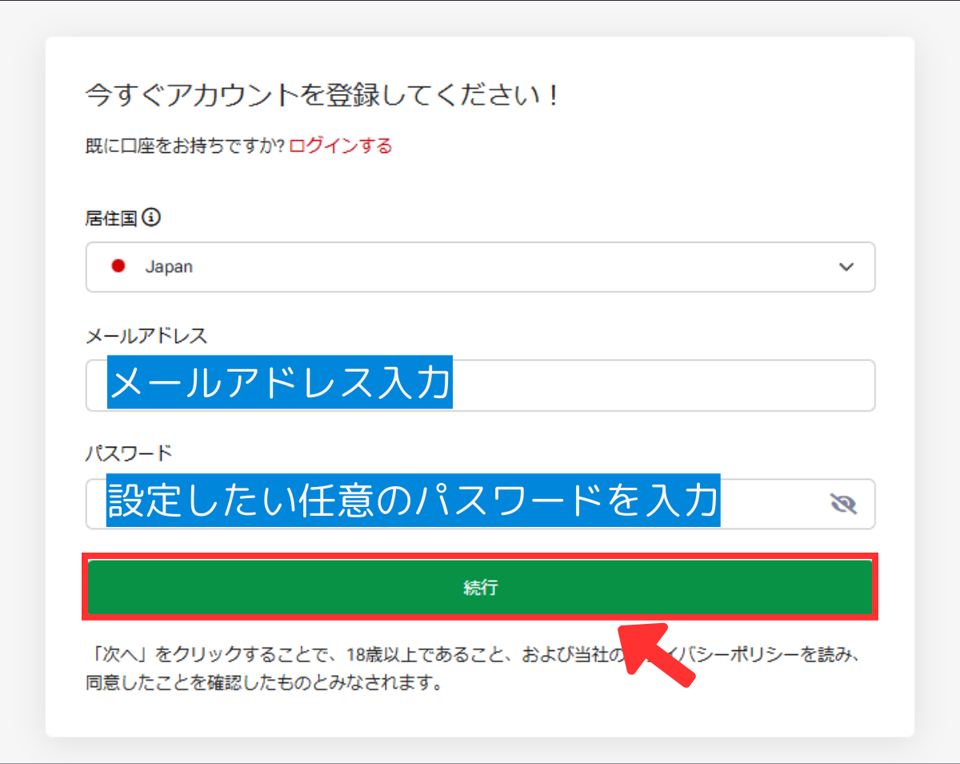
メールに届いた6桁のコードを入力して「続行」
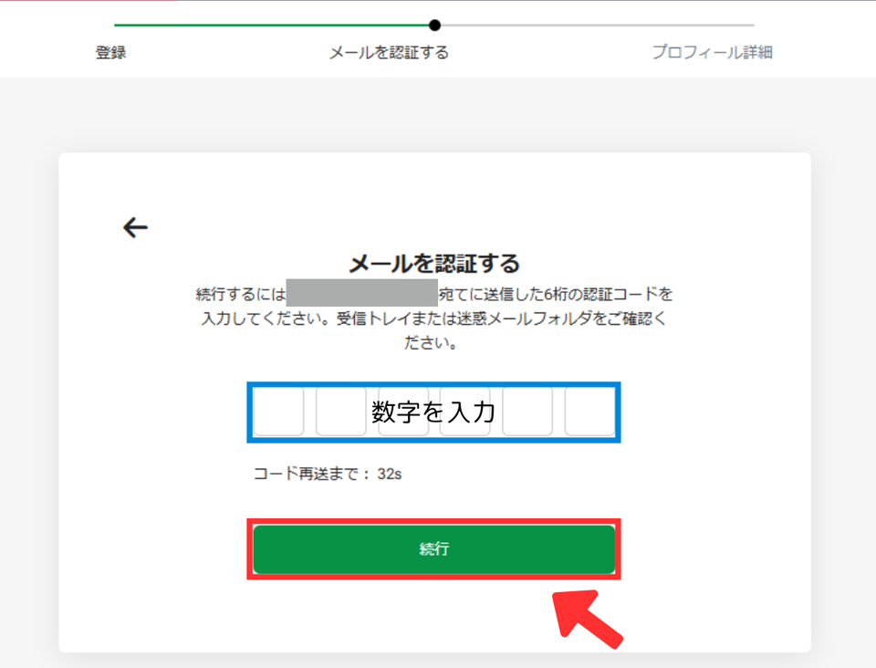
コードが見つからないときは、迷惑メールのフォルダも確認してください。
「アカウントの準備ができました」と出たら「こちらをクリック」
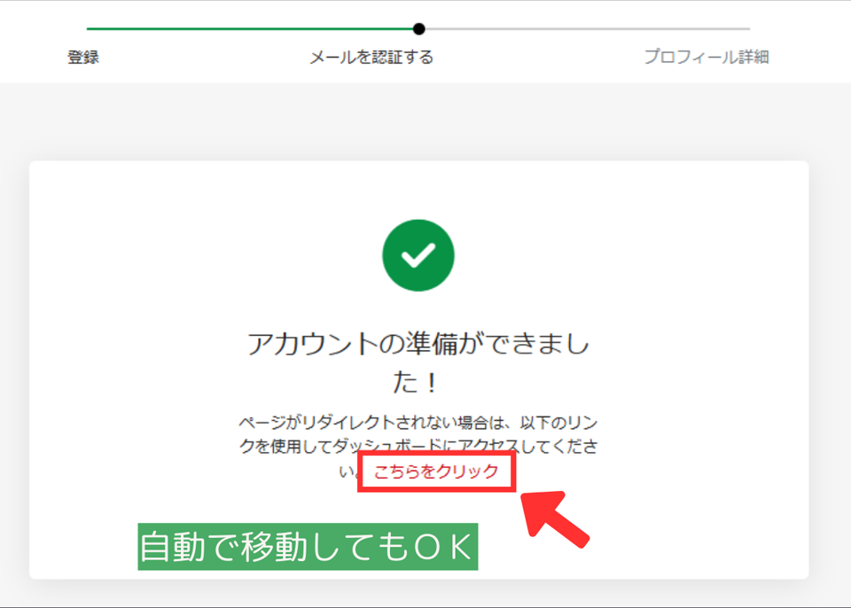
自動で次の画面に移動したときは、そのままで大丈夫です。
STEP 2
左のメニューの「登録を完了」
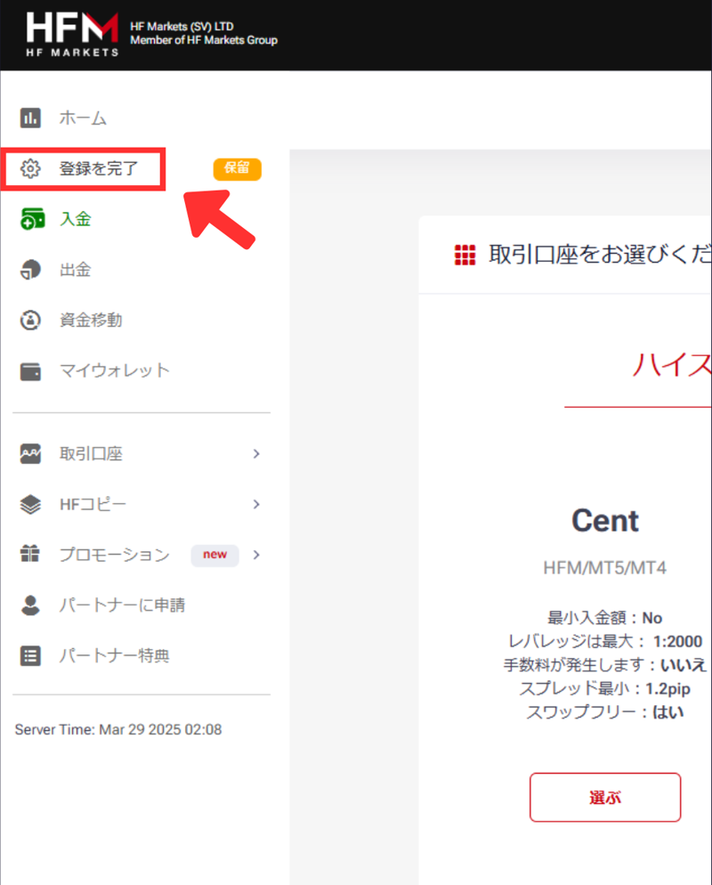
画面によって、ボタンの文字が少し違うことがあります。
名前・電話番号・生年月日を入力して「続行」
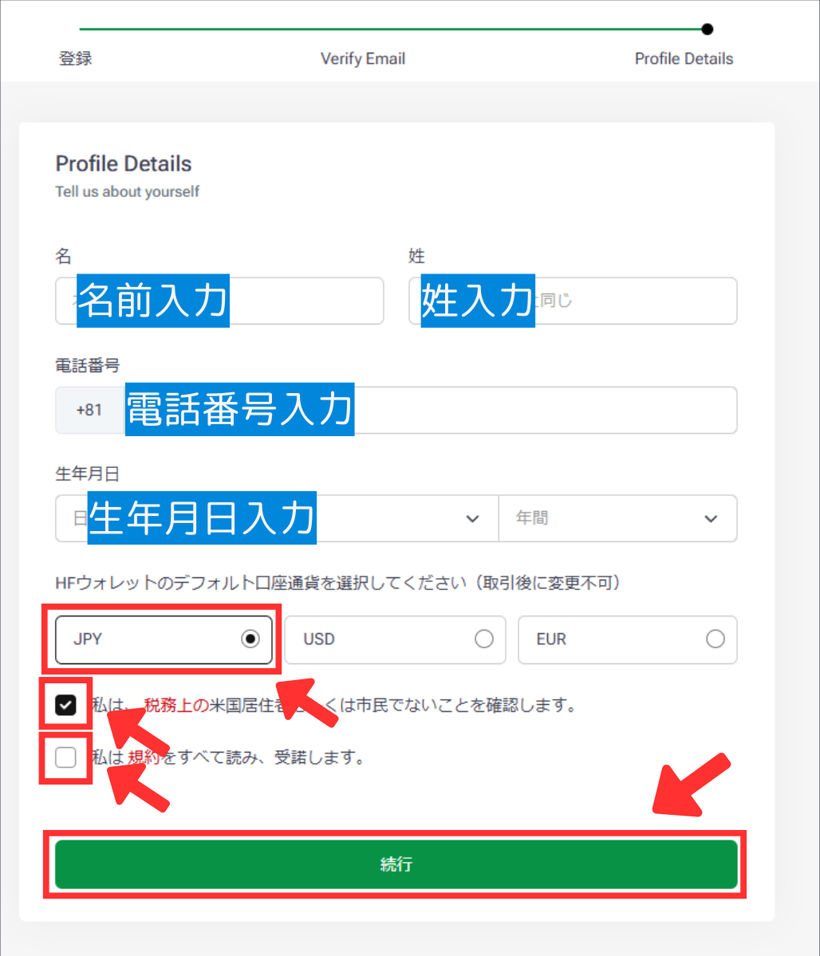
口座通貨は「JPY」を選び、下の2つにチェックを入れます。
住所などを入力し、取引経験を選んで「次へ」
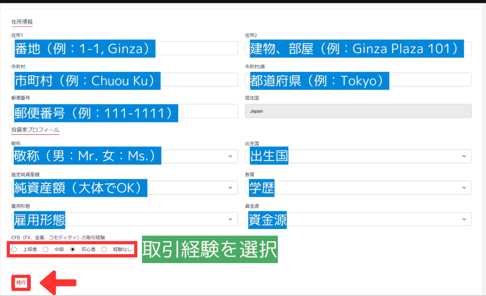
本人確認書類と住所確認書類を提出する
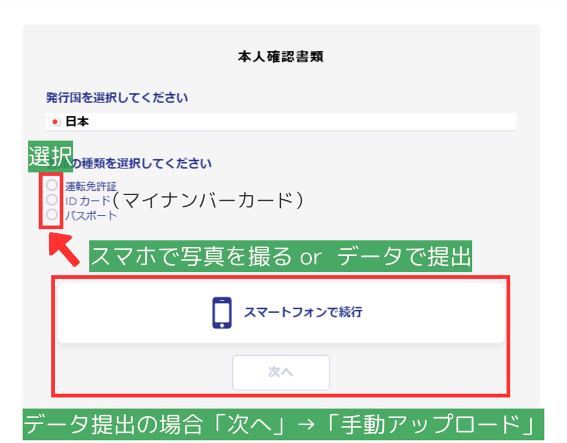
書類の種類（運転免許証・マイナンバーカード・パスポート）を選び、スマホで撮影するか、PCに保存した画像を送ります。PCから送るときは「次へ」→「手動アップロード」です。
住所確認書類も、同じように提出します。
STEP 3
左のメニューの「取引口座」→「ライブ口座を開設」
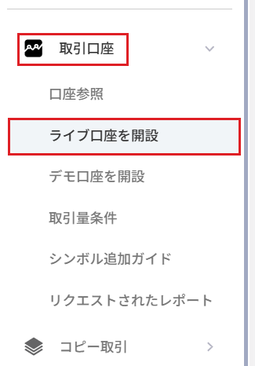
「専用アカウント」の「KATANA」を選ぶ
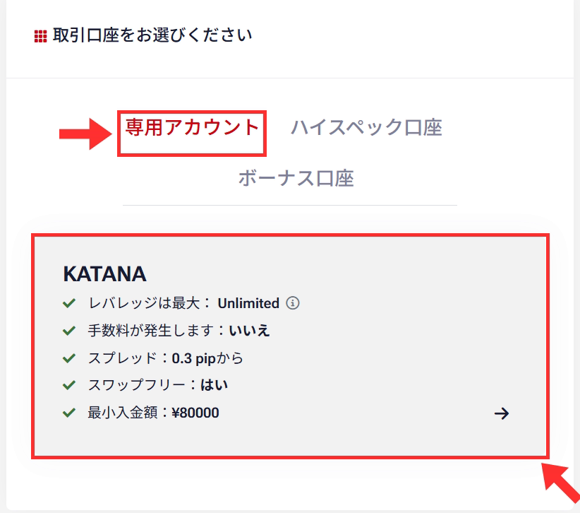
FX SPACEでは、ふだんのトレードには KATANA 口座をおすすめしています。
プラットフォームを選び、パスワードを決める
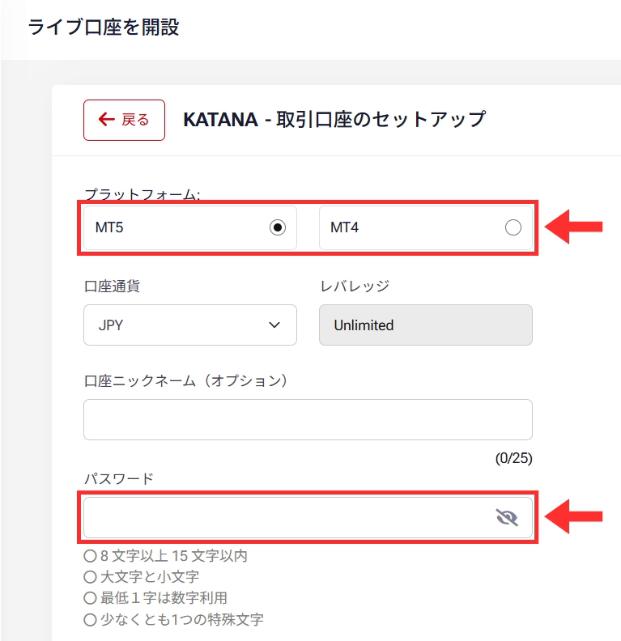
Web版YTTは、MT4・MT5のどちらでも使えます。口座通貨は「JPY」のままでOKです。
ここで決めたパスワードは、取引ツールにログインするときに使います。忘れないように控えておいてください。
利用規約にチェックを入れて「口座を開設」
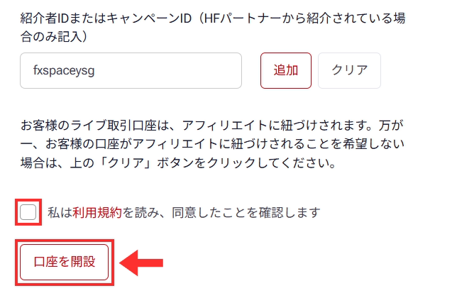
紹介者IDの欄は、そのままで大丈夫です。
口座番号が表示されたら完了
口座番号などの口座情報が画面に表示され、同じ内容がメールでも届きます。この口座番号とパスワードは、取引ツールにログインするときに使います。
STEP 4
このSTEPの画面はWindowsのものです。Macの方は、手順2の「Macの方へ」を見てください。
STEP 3 で選んだ取引ツールのページを開く
「Windowsにダウンロード」を押す
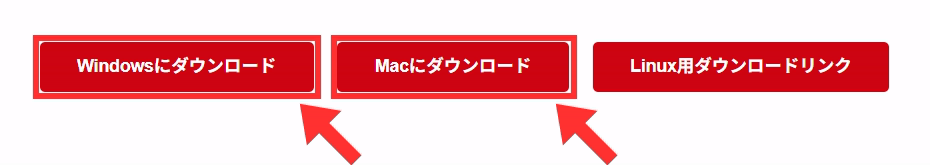
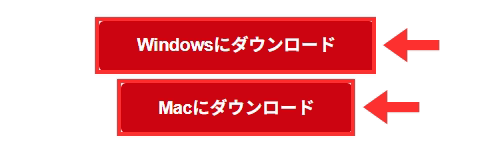
ダウンロードしたファイルを開く
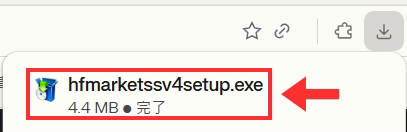
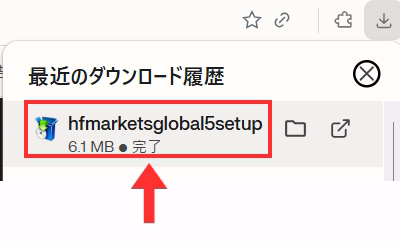
ブラウザの右上のダウンロード表示から開けます。ファイル名は、MT4なら「hfmarketssv4setup.exe」、MT5なら「hfmarketsglobal5setup.exe」です。
「このアプリがデバイスに変更を加えることを許可しますか？」と出たら「はい」を押します。
「次へ」を押してインストール
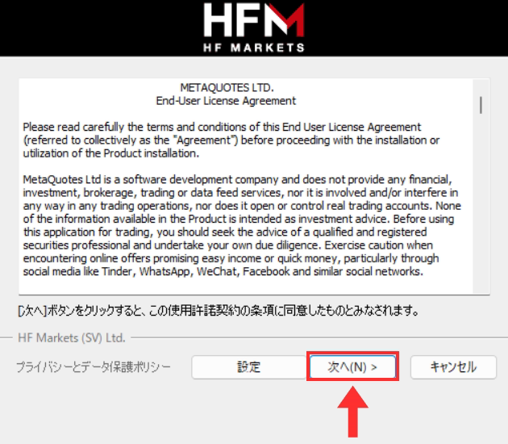
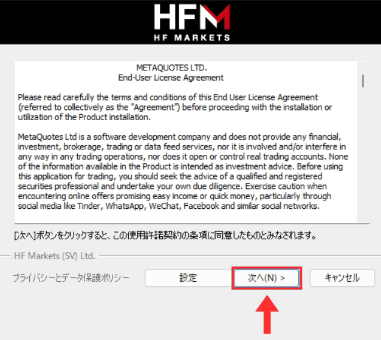
インストールが始まるので、終わるまで待ちます。
「完了」を押す
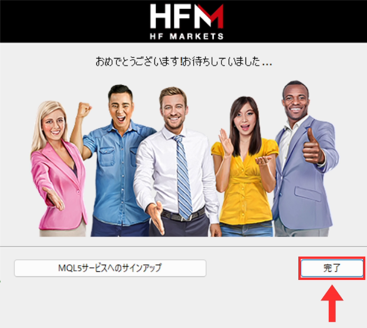
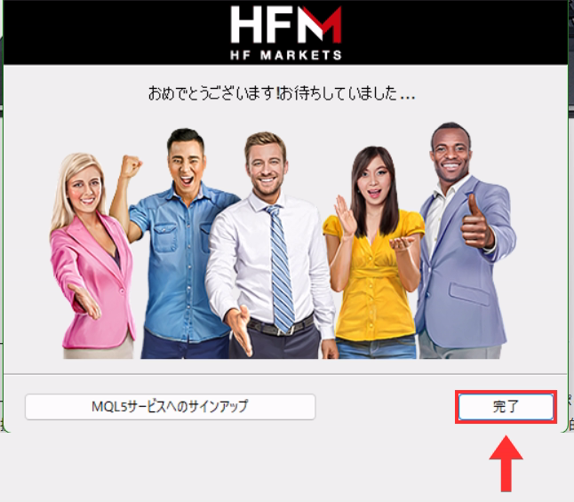
取引ツールが開きます。
「デモ口座の申請」などが出たら「キャンセル」
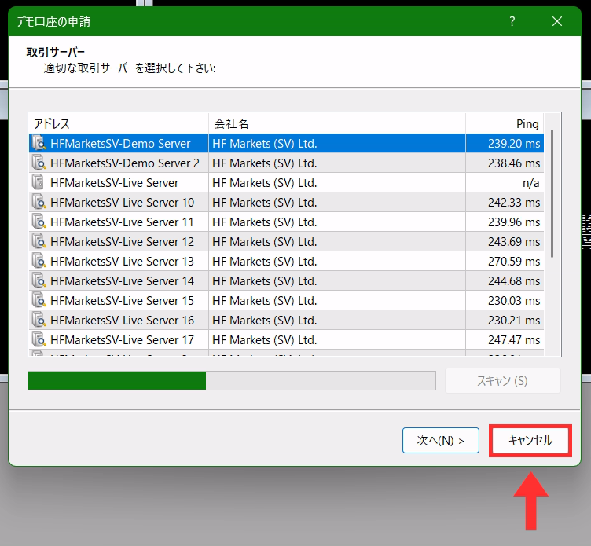
初めて開いたときに、デモ口座を作るための画面が出ることがあります（画像はMT4）。閉じて大丈夫です。
HFMから届いたメールで、ログインIDとサーバーを確認する
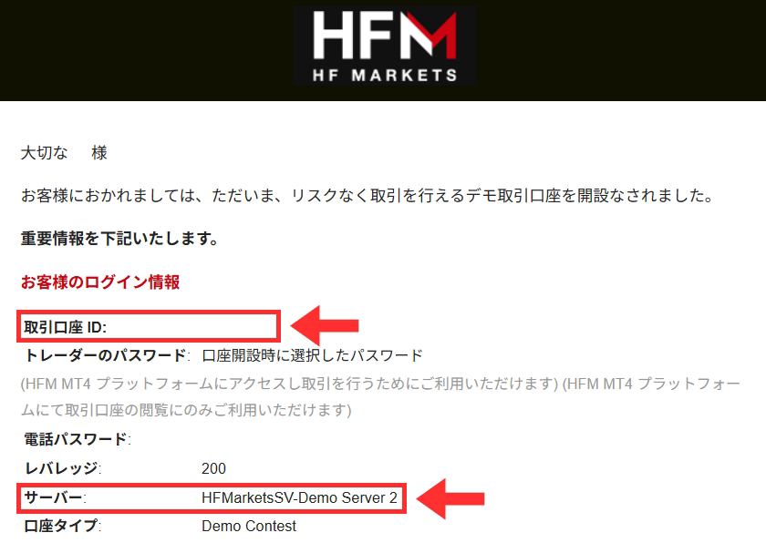
画像はデモ口座のメールの例です。サーバー名は口座によって違います。
「取引口座 ID」がログインID、「サーバー」がサーバー名です。パスワードは STEP 3 で決めたものです。取引ツールへのログインは、このあと導入方法ページの「事前準備」で行います。
実際にトレードするには、口座への入金も必要です。
口座ができたら
作った口座の取引ツールを選んで、導入方法ページに進んでください。
取引ツールへのログインは、導入方法ページの「事前準備」で説明しています。